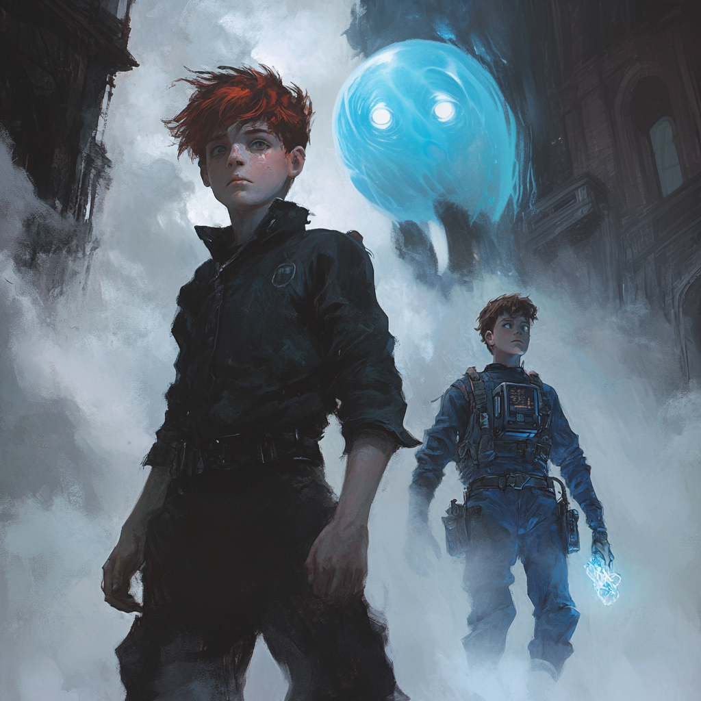

Delving Doom Island
Thursday (Continued)
Doom Island
The Swamp
- I called upon
Mold Earthto reshape the swamp, clearing the difficult terrain into something far more manageable for travel.
The Canopy
- We climbed the thick vines and found ourselves above the treetop canopy, the jungle stretching endlessly below.
Swinging Challenge
- Snakes began dropping from the trees without warning.
Kirag, ever the showman, swung from a vine mid-air and snagged a falling snake in a whirling motion. Man of immense vigorSqweemuswasn’t as lucky — a snake bit her mid-swing, and she plummeted, losing one of her three precious lives.Samwellfumbled too and lost a life in the fall.
Out of the Canopy and to the Rushing Waters
Da Boat
- We stumbled upon a boat calmly sitting on a raging river. Logic-defying, but welcome.
Da Boat on Da Move
- Once
weboarded, it surged upriver like it belonged there. - Strange creatures stirred in the water.
- Da Boat shifted between invisible lanes with every steer, reminding me more of a tavern game than a river journey.
Defend Da Boat
- The Creatures Identified as
Sahuaginfrom previous research, launched themselves from the depths. Imanaged to knock one clean back into the water with a burst of wind from theGust Spell- Da Boat had 40 "fuel" or health points — yeah, that’s a thing now.
- Steering required effort each round.
- The
Sahuaginstarted damaging the hull — and fast. Kiragwas shoved into the water and instantly vanished. That’s when we learned the water meant certain death. He re-appeared in the stern of Da Boat
Health Standing
Kirag: 2 livesSamwell: 2 livesSqweemus: 2 livesDeacon: 3 livesLucia: 3 livesPoppy: 3 livesHerm (Me): 3 lives
Da Boat Defense Continued
Wekept fending off wave after wave and navigating the chaos.- The river blocked entirely at one point — we blew it apart.
Ihurled a pen through the last chunk like a true arcane warrior. - Da Boat somehow scaled a vertical waterfall and glided smoothly into tranquil water at the summit.
Summit Waterfall — The Calm Waters
The Shore
- Lush, vibrant foliage surrounded us. Jungle paradise.
- Stonework and statues reminded me of old Civilization ruins.
- Serpent effigies loomed large — foreboding yet elegant.
The Pier
- Da Boat glided forward and docked itself as if summoned.
The Path to the Eye
- Text scrolled before us in mid-air: "At the heart of the maze lies what you seek. Within the darkness lies the truth."
Entering the Maze
- Dense fog covered our view.
Kiragled. Deacon, Sqweemus, and Ihung back while the others veered right.- We split into two squads:
- Prodding Squad:
Kirag, Poppy, Lucia, Samwell - Anchor Squad:
Me (Herm), Deacon, Sqweemus - Then the rope between us went limp —
Azlo’smeddling, no doubt. The PartiesThen Gathered in Area the Prodding Squad Wandered To- Inscriptions on the wall laid out details of people praising a flying creature. The wall shifted, revealing a hidden sanctum once they stood united.
The Sanctum
- Inside stood a massive, jeweled
Sahuagin. TheSahuaginclaimedAzlocursed him to seek our blood. - His blade ignited, and atop the totum pole sat a creature
Icouldn’t name Wefought hard. Eventually, we brought him down.Hethanked us as he faded.Sqweemuslanded a perfect shot with the ballista, killing the lurking Creature before it could act.- The Creature is identified as a
Wyvernadded to my Compendium
The Gem in the Eye Socket
- There was a
Red Gemin an eye socket and the other eye socket was empty - The
Red Gemwas oberved, but was set aside - Acting on the earlier clue,
Luciareached into the petrifiedWyvernseye socket and found a lump of coal. Lucia, ever impulsive, smashed it. Fog rolled in instantly, shrouding the sanctum.
Back at the Entrance of the Cart
Rewards from Doom Island
Weawoke back at the cart. Only a minute had passed.- A letter awaited: "Congratulations! You solved cd the puzzle. Next time, tell the cat to be more careful who he tricks. I've left some trinkets and a hefty pile of gold scattered about." Then it turned to ash.
- We looted:
- 350 Gold
Boots of Striding and Springing(Given toPoppy)Wand of Magic Missile(Given toDeacon)Flame Tongue Trident(Given toKirag)
Zorcious Keeps His Promise
Zorcioussaid someone is looking to open theDragons HoardZorciousregained his full divine form and his powers will slowly come back over timeZorciousleft us with an omen: something terrible will happen on the final day of the festival.
